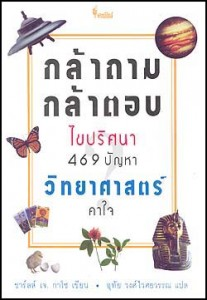

Toggle navigation
หน้าหลัก
หนังสือน่าอ่าน
ผู้จัดทำ
A book
is a device to ignite the imagination
Alan Bennett
กล้าถาม กล้าตอบ ไขปริศนา 469 ปัญหาวิทยาศาสตร์คาใจ

ผู้เขียน : ชาร์ลส์ เจ. ลาโซ
ผู้แปล : อุทัย วงศ์ไวศยวรรณ
“กล้าถาม กล้าตอบ ไขปริศนา 469 ปัญหาวิทยาศาสตร์คาใจ” เล่มนี้ เป็นการรวบรวม 469 คำถามชวนสงสัย ที่จะทำให้วิทยาศาสตร์กลายเป็นเรื่องสนุก ตั้งแต่คำถามยากๆ ไปจนถึงคำถามแนววาไรตี้ทั่วไป แถมบางเรื่องก็ออกแนวไร้สาระ ง่ายๆ แต่เต็มไปด้วยความสนุก เพลิดเพลิน อ่านง่าย จรรโลงใจอย่างยิ่ง โดยเนื้อหาในเล่มจะได้พบกับคำถามแนววิทยาศาสตร์สนุกๆ ใช้ภาษาเข้าใจง่าย ในรูปแบบถาม-ตอบ อย่างการวิวัฒนาการ ชีวิตของพืชและสัตว์ ความเป็นมาของมวลมนุษยชาติ ตลอดจนเรื่องสุขภาพโภชนาการต่างๆ รวมไปถึงเรื่องเหนือธรรมชาติอย่างยูเอฟโอ และสิ่งที่ไม่สามารถค้นหาคำตอบได้อย่างเรื่องผี ชีวิตหลังความตาย และไสยศาสตร์ต่างๆ คุณจะได้เพลิดเพลินไปกับปริศนาทั้ง 469 ข้ออันน่าทึ่ง ได้ทดสอบสมอง ทดลองปัญญา ประลองไหวพริบ แล้วคุณจะรู้ว่าวิทยาศาสตร์ไม่ใช่เรื่องน่าเบื่ออีกต่อไป เชิญค้นหาคำตอบกันได้ในเล่ม